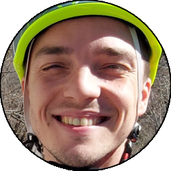
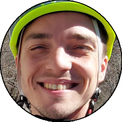

Relazione
| Data Uscita | 04-06-2023 | Area | Suretta-Emet |
|---|---|---|---|
| Luogo di Partenza | Parcheggio di Suretta - Madesimo (SO) | Quota |
1900m la partenza 2175m il Rifugio Bertacchi 2722m la cima |
| Dislivello | 850m | Tempi | 05:00 ore |
| Esposizione | Sud-Est, Nord-Ovest | Difficoltà Tecnica | T3 |
| Punti di Appoggio | Rifugio Bertacchi | Acqua | Fontana nei pressi del Lago di Emet. Diversi fiumiciattoli su tutto il percorso, meno che sulla cresta sommitale. |
| Partecipanti |
 Oracolo,
 Teo Oracolo,
 Teo
|
||
(clicca sull'immagine per scarica la traccia GPS)
Accesso
Da Lecco seguire la SS36 fino a Colico, portarsi quindi fino a Chiavenna e alla rotonda in centro paese imboccare verso sinistra verso il passo dello Spluga. Salire tutta la strada (a Campodolcino è equivalente seguire per Madesimo o per Isola, la prima è più corta ma ha i tornanti più stretti), fino ad arrivare al lago di Montespluga. Prima che la strada raggiunga il paesino di Montespluga, prestare attenzione sulla destra a dei cartelli che indicano il Rifugio Bertacchi e il lago di Emet: salire su questa carrareccia e parcheggiare nello slargo iniziale della strada.
Giro
Si segue (o si taglia) la larga strada a tornanti fino a un dosso dove si dipartono diversi sentieri, e si segue quello a mezzacosta (cartelli) che con un lungo traverso il leggera salita porta fino al dosso dove sorge il rifugio Bertacchi, nei pressi del bel Lago di Emet.
Dal rifugio ritornare brevemente sui propri passi per poi prendere verso destra, costeggiando il lato sinistro del lago fino a immettersi nella vallata che porta verso il confine Svizzero. Da qui abbandonare il sentiero principale (indicazioni Spadolazzo) e seguire la traccia che prima tra rocce e prati, poi per un largo crestone che diventa via via più ripido (ma sempre facile), porta fino alla parte sommitale dello Spadolazzo, dove si segue la facile crestina su sfasciumi o neve fino alla croce di vetta.
Scendere dal lato opposto facendo attenzione al percorso un po' esposto, superare una seconda elevazione (Pizzo Spadolazzo NW sulle carte), poi scendere il pendio verso sinistra (Nord-Ovest) in direzione del Passo del Lago Nero, che si raggiunge senza grosse difficoltà. Da qui seguire il sentiero prima sul crinale, poi che si immette nella vallata di sinistra, che in traverso raggiunge il Lago Nero sul suo versante Nord, una pozza davvero molto bella e caratteristica.
Da qui proseguire in traverso superando un paio di muri a secco, e scendere nella valle del Suretta in direzione Ovest, su percorso accidentato ma mai difficile, superando qualche casolare nella prima parte. Una volta giunti in vista del lago di Montespluga, individuare una traccia tutta a sinistra che, con un lungo traversone mantenendosi in quota sopra al lago, riporta verso Stuetta. Nell'ultima parte la traccia scompare e si passa presso qualche casa isolata, ma di difficoltà non ce ne sono ed è sufficiente mantenere la quota fino a raggiungere lo slargo dove si era partiti e chiudere l'anello.